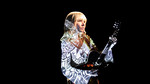
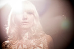

Swirling, ethereal layers hover at the fringes of the minimalist foundation of Ashley Allred’s voice, guitar and flute on All I Need, her 2014 solo debut. Born out of the final notes of the band she fronted, Odd Bird, All I Need is a note to forward movement while paying tribute to the magic of the recent past. Co-produced, mixed and engineered by Bay Area up-and-comer Paul Haile (Trebuchet, Not To Reason Why) and mastered by Jonathan Burnside (Jawbreaker, Melvins, Sleepy Jackson) the EP steps one foot firmly into the arena as a solo artist to remember.
Pics
 Videos
Lyrics
Give It A Try / I'm not convinced as they witnessed / Had my eyes on the exits / And I know I belong somewhere / So I'll give it a try out there / I think of friends I never see / do they feel all the love from me ?/ So much to live and to see / don't keep me down when I want to be free / love, find a piece of mind / and then take care of your rare find
The Time / the time has come / not what we thought / but did we really want?/ so close for so long / same sun and sky still looks after us / turning dark to light / (chorus) oh no! fall in and fall out / in this life or past / in the now hope to last / we fall in and we fall out / come on so long / the shades are drawn wide open / we'll step outside separate this time / keep on keepin' on / and it will all be fine / (chorus) for now this is how it will be / separate from the rest, go on do your best / gave up but didn't give up on me wholeheartedly / be open and be free
Into the Night / if you see her dancing with moon and sun / let her be until she's done / if you see her cryin in the water / know her grieving has just begun / she calls out into the night / where it's safe and sound / her voice carried in the wind / she is lost and never was found / the whole world is out of control / everyone's dancing on hot charcoal / we'll try and help because we believe in everyone / we can be pretty naive / we called out into the night / where it's safe and sound / our voices carried in the wind / we are bound and then we are found / why would this happen to us/ we were goin good for so long / but ya paddled out into the big body of blue/
Let Go / gone away to a new place / where time still runs out / surroundings are different there / when hope runs out will you have some to spare / we'll sell our things that we do not ever need / give up our life of comfort and home / because what is right we'll never know / until we all just let go/ brothers and sisters call out to me/ I'll hear your voices ring out / and if you let go I'll be alright you'll see/ because what I know comes always goes/ it'll ride real high and come down/ if you wanna stay up it doesn't have to be rough / get away don't let yourself stay/ and when we go we'll already know / it won't always be easy on us / so hold your head upright/ and if it tilts down I'll pick it up/ you have me now for awhile anyhow / lay safe in my arms/ and for all of our good intent/ we'll be rewarded/ it may not be laid out clearly until we all just let go
Gone Out / walk these streets in a broken down fit/ with nowhere to run/ the eclipse is round the sun / glory not saved while I'm gone all the day/ eyes as wild as my mane / garden dry /debts unpaid / my little light has gone out / where do I turn to now?/ oh it's different inside now with nobody near / it's been awhile since you came around here / broken down things collected in the streets / washed out the kindness that once was in me/ the universe tests us / respond and reflect/ look beyond the black and white to figure out what's next/ a guiding light won't lead the way when you've gone astray / find the fire inside of you/ set your worries at bay
Wild Flowers / got those cold feet running / may be gone by morning / if you leave a note to say goodbye / you'll surely miss the tears fall from my eyes/ I'll tell my friends I'm doing just fine but they all will know its a lie/ and when the end comes near / and the sun burns hot / we'll fade away into the sky/ in the western wind/ I'll go where the wild flowers go/ can't fit in anywhere else/ make a crown for my head / have rose petals for a bed / where people say I'm crazy / the flowers won't let it faze me/
We soon shall know / taught to give hard every time/ with vision not always crystalline / left the town that was our own/ locked the door of my old home/ burn the sage to cleanse / all the curves that lie ahead / or we never are or are gonna be everything or anything/ I don't know very well which way I'm to go/ if someone there cast a shadow/ we soon shall know/ in a state of panic/ mercy is made/ or we never are or are gonna be everything or anything / when it's down to rest in the mountains of the west/ guided in by the stars above / ancestors giving us all a shove / thought we disappear / thought we'd give it a try / or we never are or are gonna be everything or anything / all is in the mind/ reach out to what's divine / or we never are or are gonna be everything or anything